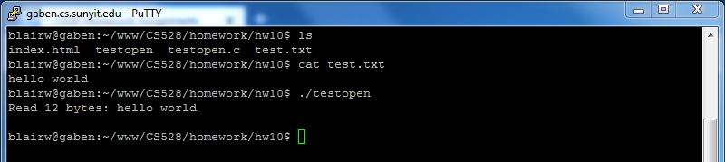

Description
Trace
- SYSCALL_DEFINE3(open)
- force_o_largefile()
- Macro Returning true if we want to force the O_LARGEFILE (LFS) flag
- do_sys_open()
- build_open_flags()
- Gets the access mode for the file based on given flags (ACC_MODE macro), e.g. O_RDONLY, O_WRONLY, O_RDWR
- getname()
- getname_flags()
- Copies the filepath given from userspace to kernel space, returning a `filename` structure
- do_filp_open()
- set_nameidata()
-
Initializes the nameidata structure, which will point to the inode for the opened file
- path_openat()
- path_init()
- Find start position of path
- while(link_path_walk() && do_last())
- Figures out path names, file permissions
- Fills in the `file` struct
- inode_<lock|unlock>()
- audit_inode()
- path_to_nameidata()
- vfs_open()
- Creates and fills an `inode` struct from the virtual filesystem for the given path
- do_dentry_open()
- terminate_walk()
- putname()
Structures
- open_flags
- filename
- file
- nameidata
- inode
Test Code
Contents of file 'test.txt':
hello world
Code:
#include <stdio.h>
#include <stdlib.h>
#include <sys/types.h>
#include <sys/stat.h>
#include <fcntl.h>
int main(void)
{
char buffer[200];
int fd = open("test.txt", O_RDONLY);
if (fd < 0) {
perror("Failed to open test.txt\n");
return -1;
}
int amount_read = read(fd, buffer, 200);
printf("Read %d bytes: %s\n", amount_read, buffer);
close(fd);
return 0;
}
Screenshot
